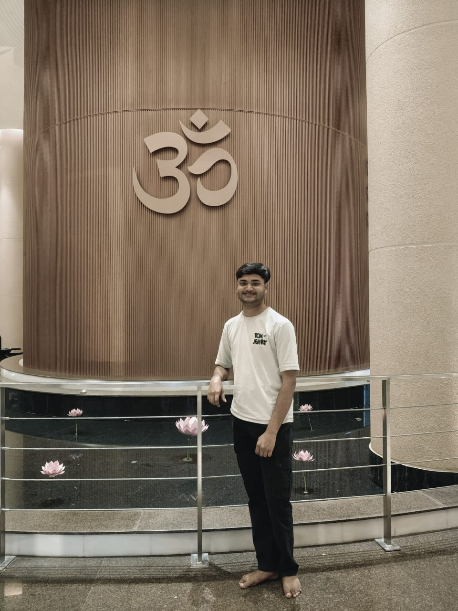

Prashant Bansal

Summary
A rising junior pursuing my Bachelor’s in Computer Science at GLA University, Mathura(India).
My skill set is a blend of technical knowledge as well as interpersonal skills.
My technical expertise involves data structures, full stack web development.
My personal skills include problem solving and collaborating well in teams.
I am seeking opportunities where I can utilize my existing knowledge for the betterment of the
organization as well as learn new skills to enhance my potential and flourish myself professionally.
Education
- Bachelor of technology, Computer Science - GLA University, Mathura(2022-2026)
- Senior Secondary Education, MD Public Se. Sr. School, Bharatpur, Rajasthan(May 2021)
- Secondary Education, MD Public Se. Sr. School, Bharatpur, Rajasthan(May 2019)
Work Experience
-
ABC Tech Solutions, June 2023 – August 2023
- Developed and tested software applications using Python and Java.
- Collaborated with a team of engineers to troubleshoot and optimize code.
- Presented project findings to senior management, resulting in the implementation of new features.
-
Chawla Systems - Web Development Intern
- Developed multiple web applications using HTML, CSS, JavaScript, jQuery, and React JS.
- Effectively diagnosed and resolved technical issues, ensuring smooth operation of web applications.
Skills
- Strong problem-solving abilities.
- Excellent communication skills, both written and verbal.
- Ability to work effectively in a team as well as independently.
- Eagerness to learn and adapt to new technologies.
- Attention to detail and ability to meet deadlines
- HTML,CSS,Python,SQL,C++,JavaScript,React.JS
Projects
-
Online Shopping Website
- Developed a full-stack e-commerce website using HTML, CSS, JavaScript, and Node.js.
- Implemented user authentication and authorization using JWT.
- Integrated payment gateway using Stripe API.
-
Weather App(Capstone Project)
- Developed a weather application using React.js and OpenWeatherMap API.
- Implemented geolocation to display the weather of the user’s current location.
-
Smart Irrigation System (Capstone Project)
- Designed and implemented an automated irrigation system using IoT technology
- Programmed sensors to monitor soil moisture and control water supply
- This resulted in a 30% reduction in water usage
Awards and Certifications
- Python for Data Science and Machine Learning Bootcamp - Udemy
- Web Development Bootcamp - Udemy
- Problem Solving through Programming in C++ - NPTEL
- Problem Solving through Programming in Python - NPTEL
Extracurricular Activities
- Member of the GLA University Coding Club
- Volunteer at the GLA University Tech Fest
- Participated in the National Level Hackathon
- Organized workshops and competitions, fostering a collaborative learning environment
Other